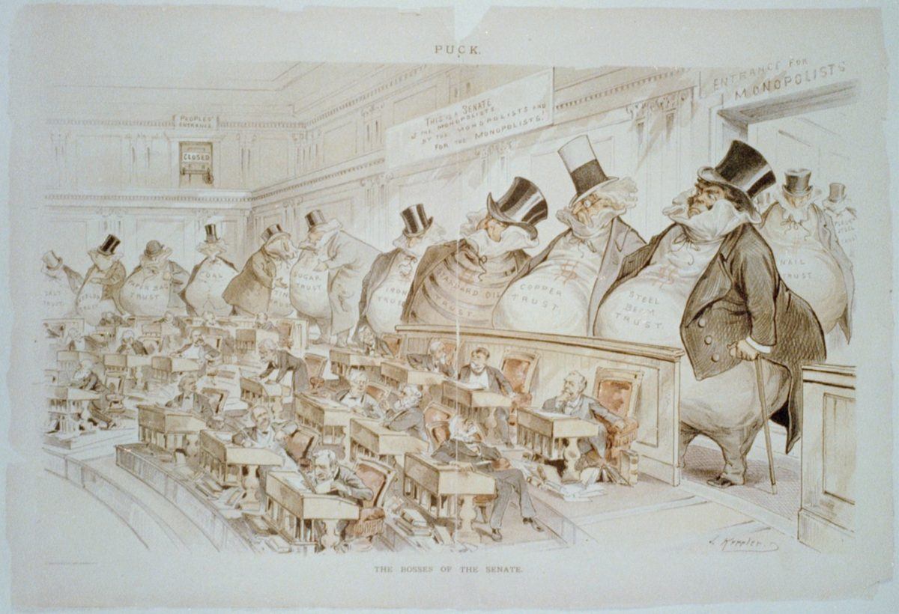

Lesson 6: Congress: the House and the Senate
Recap check
- What is a swing state?
- Name two swing states of 2024.
- Can a candidate win the popular vote and lose?
Answer key
- A state where both parties can win.
- For example Pennsylvania and Georgia.
- Yes, it happened in 2000 and 2016.
What we need to say
Today you need to imagine how things would change if the rules or the numbers were different.
Words to say it
| Word | Meaning | Example |
|---|---|---|
| Congress | the House and the Senate together | Congress makes the laws. |
| a representative | a member of the House | A representative is elected for two years. |
| a senator | a member of the Senate | Each state has two senators. |
| a district | a part of a state that elects one representative | Wyoming has one district. |
Use the words
Find the word. The first letter is given. Find the word from the word grid.
- The House and the Senate together: C _ _ _ _ _ _ _
- A member of the House: r _ _ _ _ _ _ _ _ _ _ _ _ _
- A proposed law: b _ _ _
- When the president refuses to sign: v _ _ _
- A part of a state that elects one representative: d _ _ _ _ _ _ _
Answer key
- Congress
- representative
- bill
- veto
- district
More word practice
House or Senate? (ten facts)
Write H (House) or S (Senate).
- 435 voting members
- 100 members
- a two-year term
- a six-year term
- minimum age: twenty-five
- minimum age: thirty
Answer key
- H
- S
- H
- S
- H
- S
Word families
Complete.
- to legislate: ______ (the laws), a legislator, ______ (adjective)
- to represent: a ______
- to impeach: ______ (the noun)
- to confirm: a ______
- to govern: the ______, a governor
- to vote: a ______ (person), a ______ (the act)
Answer key
- legislation, legislative
- representative
- impeachment
- confirmation
- government
- voter, vote
Read, one sentence per line
- Congress has two chambers.
- The House of Representatives has 435 voting members: each represents a district, and big states have more districts.
- Representatives are elected for two years, so all 435 seats are elected every two years.
- A representative must be at least twenty-five.
- The Senate has 100 senators, two per state, whatever the size of the state.
- Senators are elected for six years, and every two years one third of the Senate is elected.
Source: house.gov, The House explained
Look at the diagram
Grid: the two chambers of Congress
| House of Representatives | Senate | |
|---|---|---|
| Members | 435 (with voting rights) | 100 |
| Per state | by population: from 1 (for example Wyoming) to 52 (California) | 2 for every state |
| Term | 2 years | 6 years |
| Elected | all seats every two years | one third every two years |
| Minimum age | 25 | 30 |
| Special powers | impeaches a president; starts tax laws | holds the trial; confirms judges and ministers; approves treaties |
| Leader in 2026 | the Speaker, Mike Johnson | the Vice President, JD Vance, presides |
The Senate by thirds
| Group of senators | Last elected | Next election |
|---|---|---|
| Group 1 | 2024 | 2030 |
| Group 2 | 2020 | 3 November 2026 |
| Group 3 | 2022 | 2028 |
How a bill becomes a law
Sources: house.gov, USAGov, the Constitution.
Look at the drawing

Picture labelling: The Bosses of the Senate (1889)
Look at Keppler's cartoon. Find:
- the People's Entrance
- the Entrance for Monopolists
- the sign on the wall
- the giant money bags
Answer key
- at the top left: it is closed
- at the top right: it is open
- This is a Senate of the monopolists, by the monopolists and for the monopolists!
- standing behind the senators, with top hats
Tasks
- Complete the comparison table: members, term, minimum age, who they represent.
- Read the thirds diagram: which senators are elected in 2026? And in 2028?
- Say it: imagine. What would happen if the president vetoed a bill? If Wyoming had more people? Answer with If + past, would + verb.
Grammar on the board
To imagine a result, we need the second conditional: If she won Texas, she would get forty electoral votes. What would happen if the president vetoed a bill?
Listen to your teacher, then copy the board.
The second conditional; adverbs of frequency
- Rule
- If + past, would + verb.
If I were a senator, I would vote yes. - Form
- If a candidate won Texas, she would get forty electoral votes. If I were a senator, I would vote yes. Question: What would happen if the president vetoed a bill?
- Examples
- If Wyoming had more people, it would have more representatives.
- If I were in Congress, I would vote for this bill.
- Watch out
- If I would be a senator → If I were a senator.
- If she wins Texas, she would get → If she won Texas, she would get (keep the pair).
- French and English
- French: Si j'étais sénateur, je voterais oui. Same logic: si + imparfait = if + past; conditionnel = would. Never si je serais, never if I would be.
Quick check
- If she ______ (win) Texas, she ______ (get) forty votes.
- If I ______ (be) a senator, ...
- Real or imaginary? If Congress had one chamber, laws would pass faster.
Answer key
- won, would get
- were
- imaginary
Practise
Stage 1. Recognise
Real possibility (1) or imaginary situation (2)?
- If the president vetoes the bill, Congress will vote again.
- If I were a senator, I would vote yes.
- If the House passes the bill, the Senate will vote next week.
- If Wyoming had more people, it would have more representatives.
- If a candidate won Texas, she would get forty electoral votes.
Answer key
- 1
- 2
- 1
- 2
- 2
Stage 2. Transform
Imagine the opposite of the fact (second conditional).
- Senators are elected for six years. (two years)
- Each state has two senators. (by population)
- The president can veto a bill. (could not)
- Congress has two chambers. (one)
- Texas has forty electoral votes. (a candidate wins it)
Answer key
- If senators were elected for two years, they would campaign all the time.
- If senators were given by population, California would have many more senators.
- If the president could not veto a bill, Congress would be more powerful.
- If Congress had only one chamber, laws would pass faster.
- If a candidate won Texas, she would get forty electoral votes.
Stage 3. Guided production
What would happen if ...? Answer in a full sentence.
- ... the House and the Senate disagreed on a bill?
- ... the president vetoed a bill?
- ... a state had only one representative?
- ... the Senate were split 50 to 50 on a vote?
- ... the House impeached a president?
Answer key
- If they disagreed, the bill would not become a law.
- If the president vetoed it, Congress would need two thirds of each chamber to pass it.
- It would have three electors (one plus two senators).
- The Vice President would break the tie.
- The Senate would hold a trial.
A. Choose the right form
Choose the correct verb.
- If I (was / were) a representative, I (will / would) visit my district every week.
- If California (had / has) fewer people, it (would have / will have) fewer seats.
- If the president (vetoed / vetoes) the bill, Congress (would vote / votes) again.
Answer key
- were, would
- had, would have
- vetoed, would vote
B. Complete with the second conditional
Put the verbs in the right form.
- If a candidate ______ (win) Texas, she ______ (get) forty electoral votes.
- If Wyoming ______ (have) more people, it ______ (get) more representatives.
- If I ______ (be) a senator, I ______ (vote) for ______ (your idea).
Answer key
- won, would get
- had, would get
- were, would vote (any idea)
Figure of speech
Figures of speech: parody, hyperbole and personification
A parody copies famous words to make fun of something. Keppler's sign parodies Lincoln's Gettysburg Address (1863): government of the people, by the people, for the people. Hyperbole is exaggeration: the money bags are huge. Personification: the bags have faces and hats, like people.
- Which famous words does the sign parody?
- Why are the money bags drawn so big?
- Why is the People's Entrance closed?
Answer key
- Lincoln's Gettysburg Address: government of the people, by the people, for the people.
- Hyperbole: to show that big companies were too powerful.
- It is a symbol: ordinary people had no access to the Senate.
Say it
Oral task: mini debate, should every state have two senators?
Steps
- Choose a side.
- Give two arguments.
- Answer the other side.
- Vote.
- I agree / disagree because ...
- If every state had the same number of senators as its population, ...
- That's true, but ...
- If small states lost their senators, ...
Model answer
I agree with two senators per state because small states need a voice. If senators were given by population, Wyoming would almost disappear. That's true, but California has many more people, so it is not fair for them.
Gap-fill worksheet
- The House has voting members.
- The Senate has senators.
- Representatives are elected for years.
- Senators are elected for years.
- The president can refuse a bill with a .
- Each state has two .
- The leader of the House is the .
- Congress can a veto with two thirds of each chamber.
- Only the House can a president.
- A representative represents a .
Answer key
- 435
- 100
- two
- six
- veto
- senators
- Speaker
- override
- impeach
- district
Going further (optional)
Mixed conditional: past condition, present result: If the 17th Amendment had not been ratified, senators would still be chosen by state legislatures today. Formal inversion: Were the president to veto the bill, Congress would vote again. Should the Senate be split, the Vice President would vote.
Translate into English
- Si j'étais sénateur, je voterais pour cette loi.
- Si le président opposait son veto, le Congrès devrait voter à nouveau.
Answer key
- If I were a senator, I would vote for this bill.
- If the president vetoed it, Congress would have to vote again.